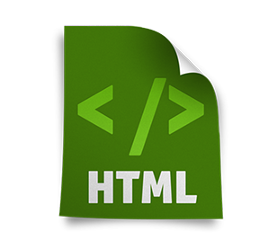
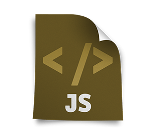
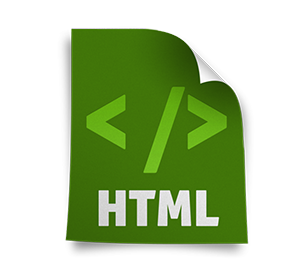

-
我热爱web前端!
我精通html css ,熟练h5 js ajax jqery,熟悉seajs requirejs,了解php,nodejs.
-

熟练HTML语言
熟练HTML + CSS,可以兼容大部分主流浏览器,例如FirFox chrome opera ie6-10 -

熟练CSS语言
熟练CSS2,了解CSS3标签,了解web语义化，可以熟练手写符合W3C标准的页面 -

熟练javaScript语言
熟练原生javaScript语言，熟练jQuery,ajax,jsonp等
-

-
联系我！
求认识 求交流 求分享 希望我们可以共同进步
联系电话：15601832659
微信: dr900129
eMail：hello_DR@163.com
github: hellodr333.github.io/DR-blog
- 1
- 2
- 3
点击图片试试效果~
改下透明度试试吧~
×


我可以用JS在页面上显示酷炫的效果！
tab选项卡,鼠标拖拽,自定义滚动,瀑布流,延时加载,手风琴,碰撞检测等等.
业余时间模仿其他网站写的一些网页
在没事的时候会在网上找些psd文件来还原设计图,从最简单的静态页面到现在可以写出一些h5的效果来，看到自己的进步，觉得再辛苦也是值得的。 对于代码一直有着浓厚的兴趣,在空闲的时间里会去慕课网或者w3c学习各种前端的知识。总是难以忘记实现一个小效果时候的兴奋和解决一个bug时候的满足感。 欢喜前端 欢喜生活